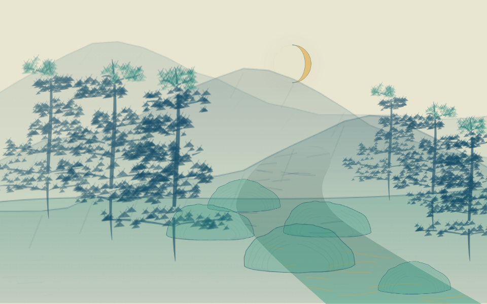
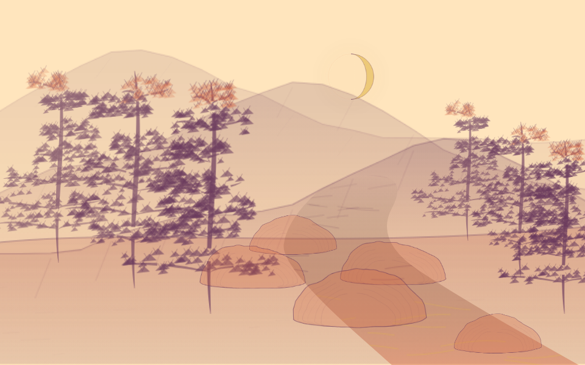
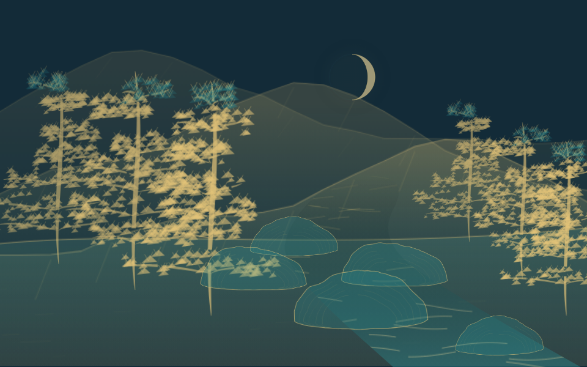
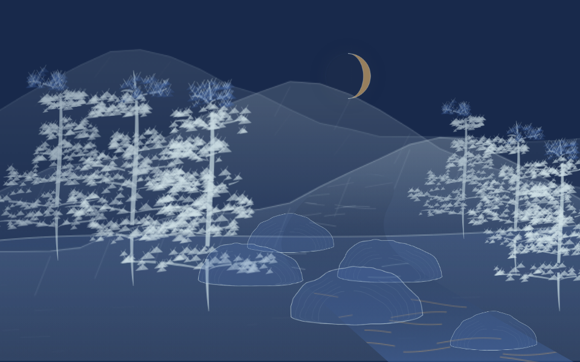
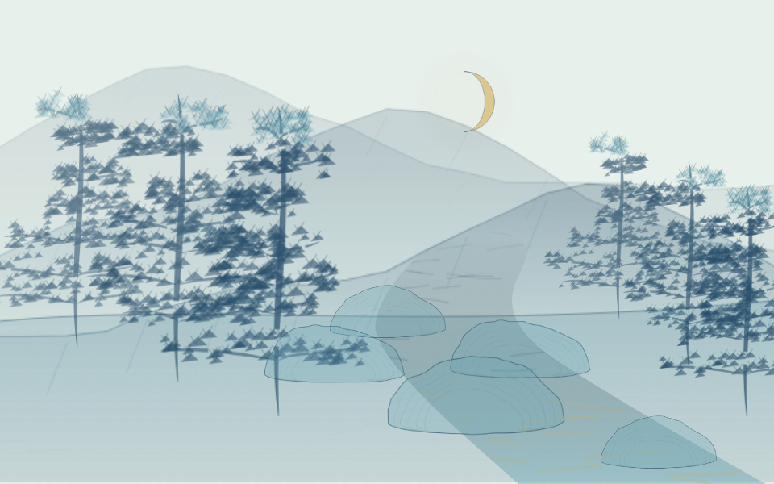
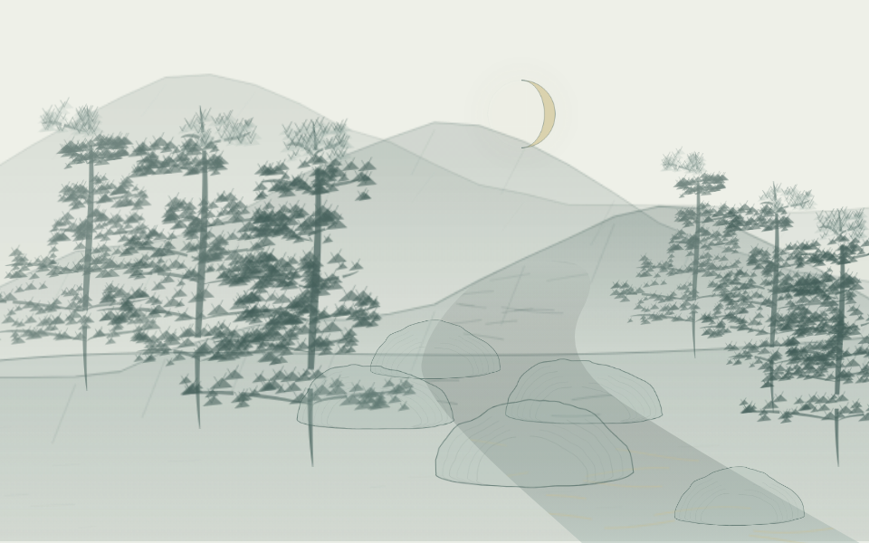

同一份“明月松间照，清泉石上流”的真实语义回答，只切换配色。22 套可选方案包括原规划的 16 组、两组暮夜淡彩与四组鲜明山色。这是观看选择，尚未实现完整情感自动配色；夜景也可手动试暖色。
回到生成器，点击“回看上次结果”即可直接试色，不必再次请求模型。画面下方有六张快捷色卡和完整下拉菜单；动态程度默认 140%，可调 0–200%，风力另调。人物保留简洁写意，主要增强水纹、飞鸟与草木云雾的动态。已明确静止的主体保持静止。






本轮没有新增模型调用。98 项本地检查，以及实际像素切色、动态时钟、暂停、固定落点、附着、导出和 390px 窄屏检查通过；画面效果仍待观看。